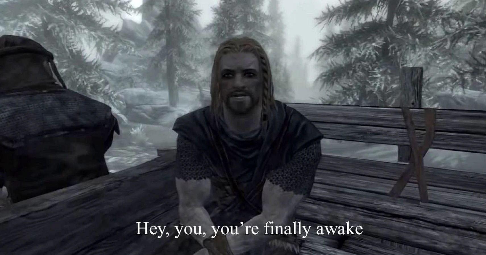
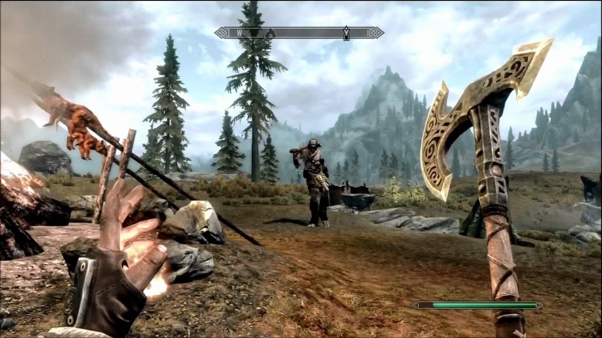
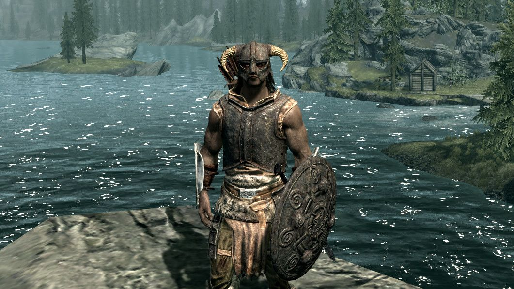
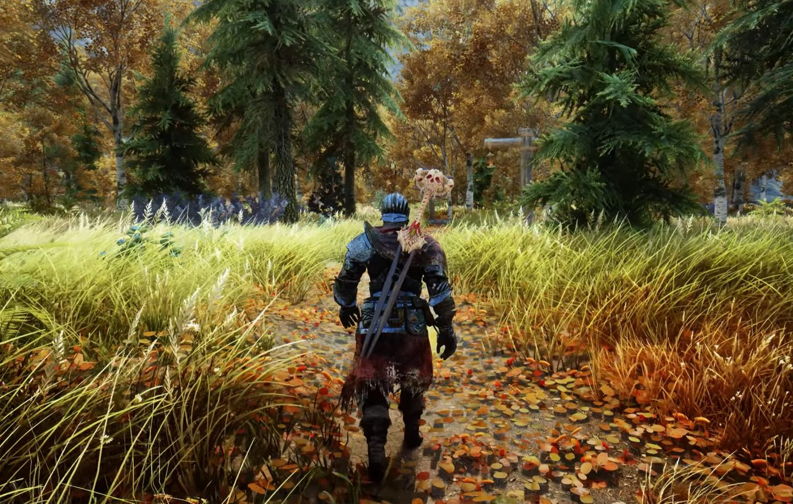

Kritik Naratif Tentang The Elder Scrolls V: Skyrim
Oleh Erik Triayuda Wijaya
The Elder Scrolls V: Skyrim atau sering disebut dengan 'Skyrim' adalah sebuah game fantasi
RPG yang dikembangkan oleh Bethesda Game Studio dan dipublikasikan oleh Bethesda Softworks
pada tahun 2011. The Elder Scrolls V: Skyrim adalah seri kelima dari seri game 'The
Elder Scrolls' dan telah dibeli jutaan kali di platform game.
Tentang Skyrim

"Hey, you're finally awake"
Skyrim adalah game yang dikenal di kalangan pecinta game pada tahun 2011 ke atas. Bahkan sampai saat
ini yaitu tahun 2024, Skyrim masih dimainkan oleh jutaan orang mulai dari anak umur belasan bahkan
sampai 70 tahun. Ada satu pemain yang terkenal karena umur lansianya yang sampai sekarang masih
bermain Skyrim dan membuat video gameplay -nya di kanal YouTube.
"Hey, You're Finally Awake!"
Skyrim juga dikenal dengan meme "Hey, you're finally awake!"-nya. Meme ini berasal dari fase
opening dari game-nya yang berlatar penangkapan Faksi Stormcloak, karakter pemain
ditangkap bersama dengan faksi ini lalu dibawa menggunakan gerobak Faksi Imperial. Waktu berlalu dan
karakter pemain berhasil dari penangkapan tersebut dikarenakan sebuah kejadian yang akan membuka
kesempatan baru bagi sang karakter. Saat ini juga, sang karakter bebas untuk melakukan penjelajahan
di tanah Skyrim ini.
Pengalaman Bermain

Gameplay Skyrim
Skyrim adalah game yang memberikan kebebasan kepada para pemainnya, cakupan peran game RPG ini
sangatlah luas mulai dari petualang biasa, pemanah, barbarian, penyihir, bahkan pedagang. Pemain
dapat memilih peran tanpa dibatasi pada peran itu sendiri, artinya pemain dapat berganti peran
kapanpun dan dimanapun.
"I used to be an adventurer like you!"
Dengan beragam Non Player Character atau disebut NPC membuat dunia dalam game Skyrim ini
menjadi lebih hidup. Tiap peran atau karakter memiliki jalan cerita dan masa lalu mereka sendiri.
Tidak jarang aksi yang dilakukan karakter pemain memengaruhi para NPC, misal karakter pemain berbuat
jahat, maka para NPC akan membalas. Sebuah edisi yang sangat bagus untuk game RPG.
Pendapatku

Mengenai Skyrim
Setelah bermain selama ratusan jam lamanya di salah satu platform, Skyrim menjadi game yang tidak
akan mudah kulupakan. Para NPC dan jalan cerita yang menyentuh akan membuatku selalu mengingat
mengenai game ini. Berbagai cerita mulai dari cerita utama dan cerita faksi telah dibuat dengan
matang dan interaktif, membuat pemain merasa bahwa Skyrim adalah rumah mereka.
1. Pembawaan Cerita
Cerita dibawakan dengan percakapan dan juga kejadian yang berlangsung di sekitar pemain. Karakter
pemain diberikan kebebasan bergerak pada saat sesuatu terjadi dalam cutscene, kecuali saat
sedang terjadi percakapan antara karakter pemain dengan NPC secara langsung.
2. Plot-Hole
Skyrim atau lebih tepatnya The Elder Scrolls series, memiliki lore atau cerita yang
panjang dan luas untuk dieksplorasi. Tapi tidak jarang juga terdapat jalan cerita yang masih
"berlubang" atau belum dipahami oleh para pemain, hal ini terkadang memberikan ketidakpuasan kepada
pecinta roleplaying. Contohnya adalah di opening scene, pemain tidak diberikan cerita
bagaimana cara karakter utama terjebak dalam situasi tersebut. Seharusnya diberikan lebih untuk
bagian-bagian yang belum terjelaskan.
Potensi Skyrim

Modded Skyrim
Dalam topik lain, "Modding" adalah sebutan untuk memodifikasi sesuatu agar terlihat berbeda
dari yang aslinya. Dalam hal ini, Skyrim adalah salah satu game yang memiliki komunitas
modding terbesar dalam industri game. Banyak pemain yang secara aktif membuat dan menggunakan
mod untuk meningkatkan gameplay dar Skyrim sendiri. Banyak kreator yang dapat mengubah
tampilan dan gameplay Skyrim secara menyeluruh. Mungkin beberapa tahun lagi, Skyrim dapat
menyaingi game Triple-AAA lain.